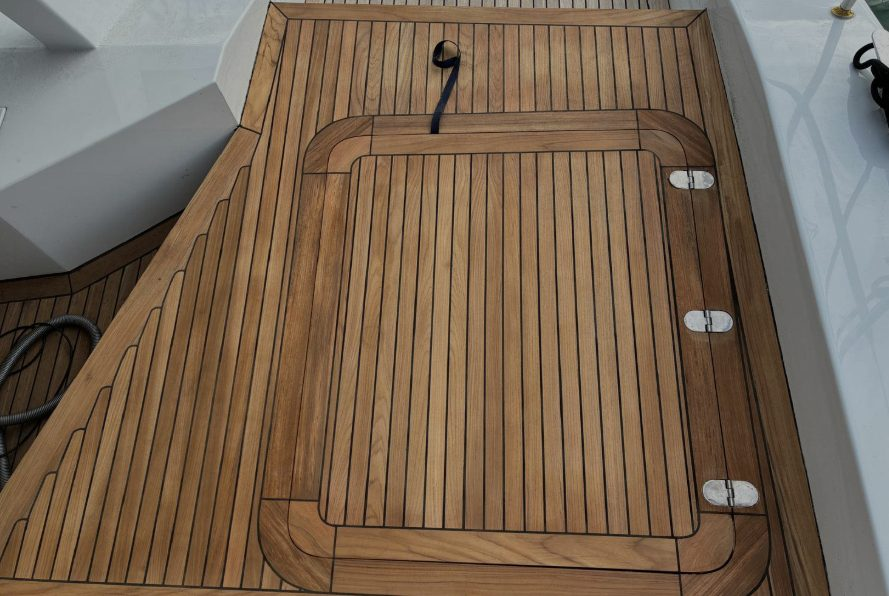
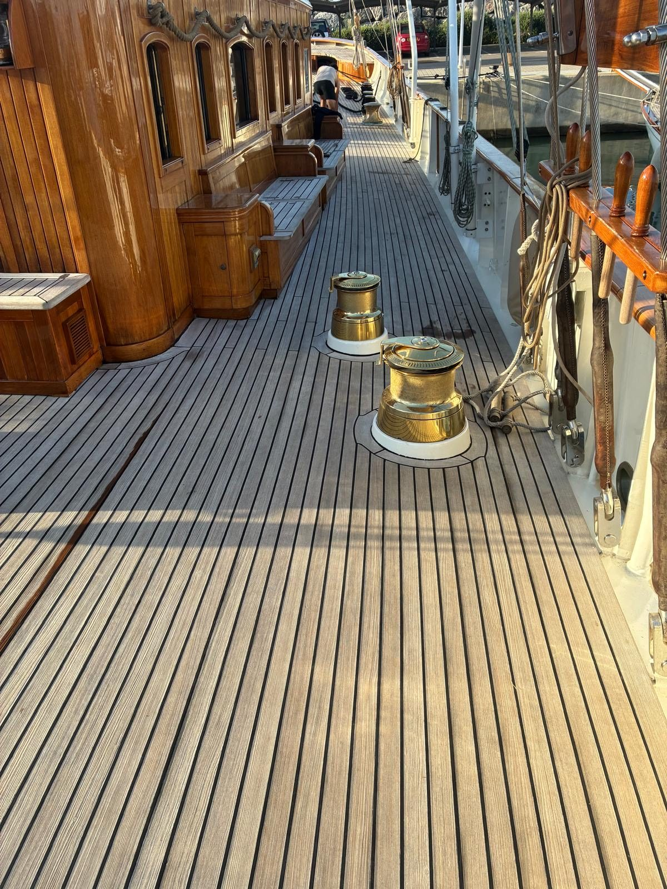

01
Renovación de cubierta en teca
Retiramos la cubierta gastada y montamos teca nueva a medida, tabla a tabla, con sus curvas, juntas y remates.

Carpintería naval · Valencia · Desde 2009
Renovamos cubiertas de teca, cambiamos el Sikaflex y hacemos carpintería a medida para yates y veleros. Con base en Valencia, trabajamos donde esté tu barco: de Miami a Croacia.
Servicios
Trabajamos la madera de teca de principio a fin: desde quitar la cubierta gastada hasta el último remate del interior.
Retiramos la cubierta gastada y montamos teca nueva a medida, tabla a tabla, con sus curvas, juntas y remates.

Sacamos las juntas viejas, limpiamos y volvemos a calafatear para que la cubierta quede estanca y con la línea negra impecable.

Camarotes, cocinas, cofres, tapas y remates a medida, dentro y fuera del barco, en madera que aguanta el mar.

Lijado, limpieza y repaso de juntas con un plan pensado para que la cubierta acompañe al barco hasta sus 100 años.

Oficio
Somos carpinteros navales. Medimos, cortamos y ajustamos cada pieza en el propio barco, con la paciencia que pide una madera que tiene que vivir al sol y al salitre durante décadas.
Proceso
Vemos el barco o nos mandas fotos. Medimos, revisamos el grosor de la teca y el estado de las juntas.
Retiramos lo que hay que cambiar y dejamos la base limpia, seca y lista para trabajar.
Ajustamos cada tabla en su sitio y sellamos las juntas con Sikaflex.
Lijamos, repasamos remates y entregamos la cubierta lista para navegar.
Trabajos
Algunos de nuestros trabajos. Toca una foto para verla en grande.
Antes y después
Trabajo en curso. Así estaba la cubierta al empezar; el después llega en cuanto lo terminemos.


Destinos
Nuestra base está en Valencia, pero vamos al barco. Estos son los sitios donde ya hemos trabajado:
Valencia
Reseñas
Muy profesional , atento al detalle !!! Recomendable 100%
Calidad y servicio 10/10
He trabajado con ellos y son el top en carpintería náutica.
Muy profesionales y comprometidos con la calidad.
Preguntas
Sí. Hemos trabajado en Miami, Nueva York, Seattle y St. Thomas, y en Francia, Italia, Croacia, Grecia, Alemania, Holanda, Bélgica, Turquía y Egipto. Dinos dónde está el barco y lo organizamos.
Sí. Mándanos por WhatsApp fotos de la cubierta o de la zona que quieres arreglar, la eslora y el puerto, y te damos una primera valoración. El presupuesto definitivo se cierra al ver el barco.
Depende de los metros de teca, de su estado y de si se cambia todo o solo las juntas. Te damos el plazo concreto junto con el presupuesto.
Si la madera conserva grosor suficiente, muchas veces basta con renovar las juntas y lijar. Lo comprobamos en la inspección y te decimos qué compensa.
Contacto
Rellena lo que sepas y te abrimos WhatsApp con el mensaje ya escrito. Solo tienes que enviarlo.
O directamente